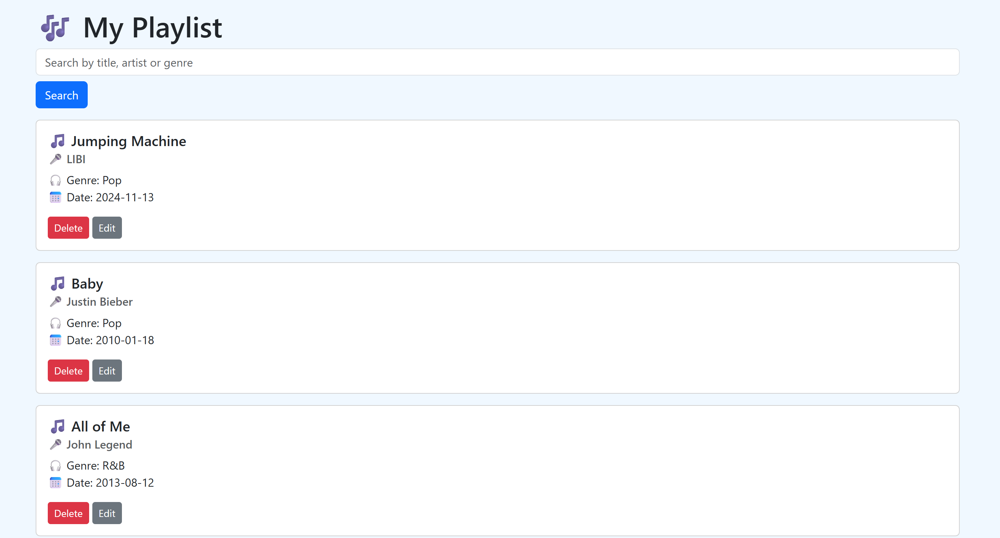
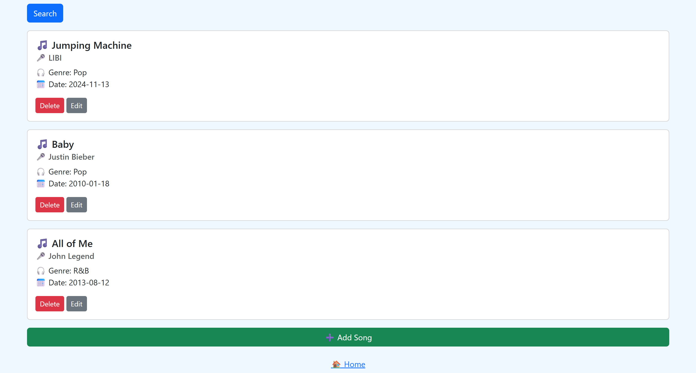
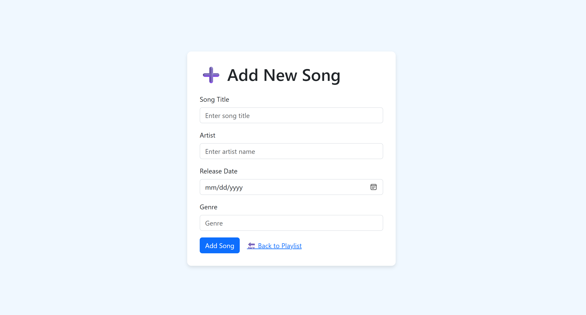
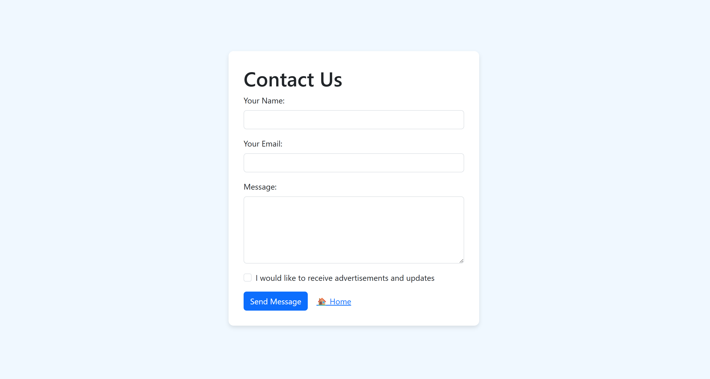
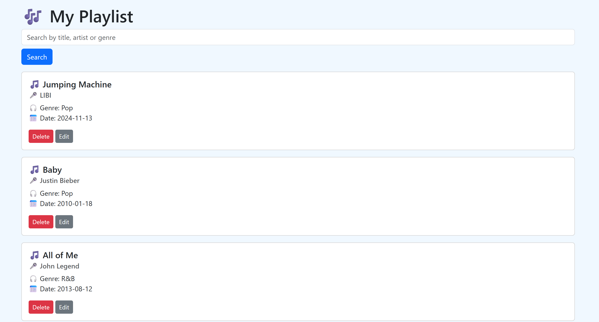
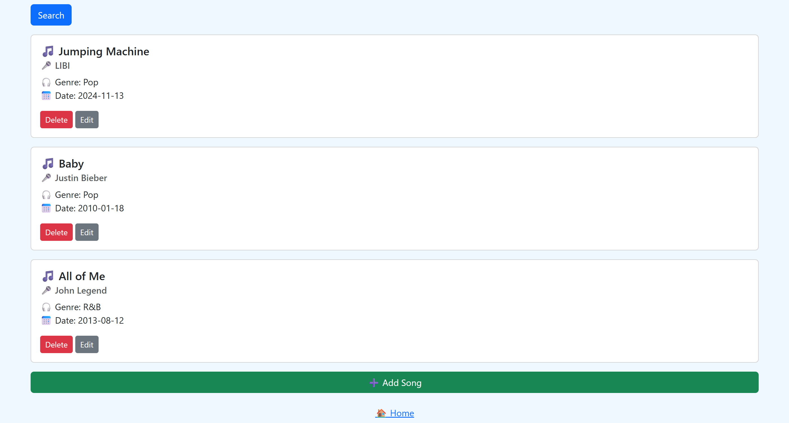
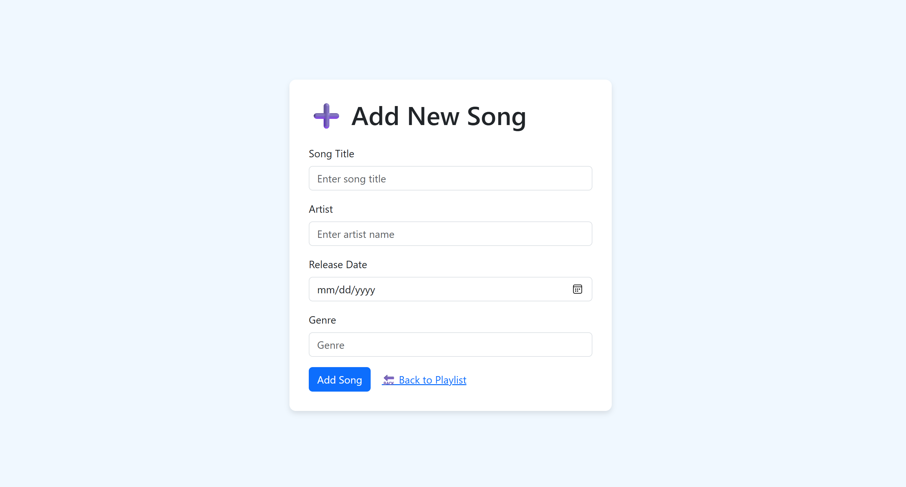
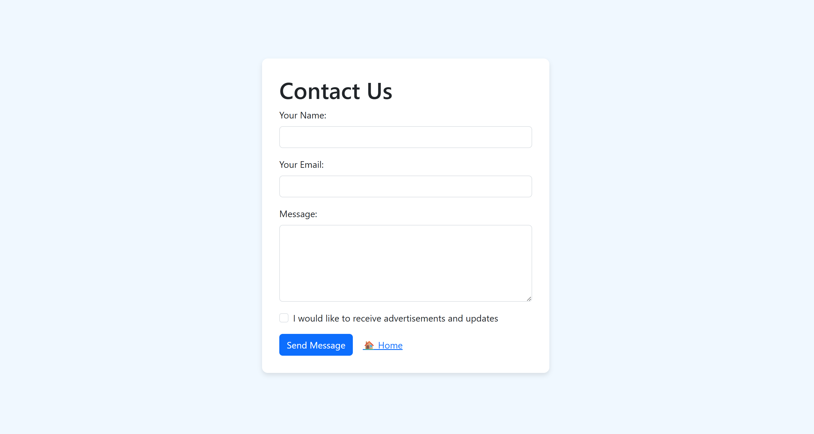

Kai Wen Music Playlist Tracker is a Node.js web application that allows users to manage a personalized music playlist. Users can add new songs, search through the playlist, edit existing entries, and delete songs — all through a simple and responsive Bootstrap interface. The app also includes a contact form for user feedback. All data is stored temporarily in memory, making it ideal for learning backend fundamentals.